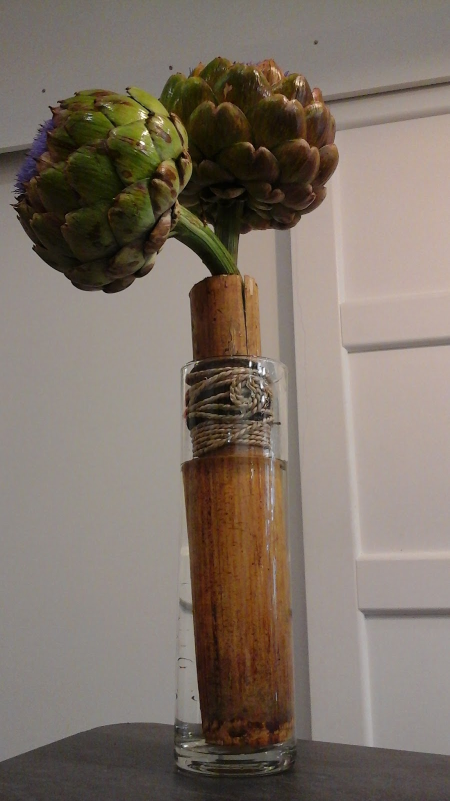

Bouquets & compositions
Des créations florales pour transmettre une attention, marquer un moment ou simplement apporter une touche de couleur chez soi.
Pour offrir, décorer ou simplement se faire plaisir, Dahlia Shop réunit fleurs, compositions, plantes et conseils dans sa boutique de Lyon Vaise.
Des créations florales pour transmettre une attention, marquer un moment ou simplement apporter une touche de couleur chez soi.
Des plantes et inspirations végétales pour créer une ambiance plus vivante, apporter du relief à un intérieur ou trouver une idée à offrir.
Besoin d'être guidé ? Les avis clients mettent régulièrement en avant l'écoute et les conseils reçus pour choisir fleurs, plantes ou compositions.

Dans les avis, trois mots reviennent naturellement : accueil, conseils et qualité.
« Plus qu'une boutique une oasis de verdure ! »
— Julia Lunel, avis Google
Des compositions généreuses, du végétal et beaucoup de couleur.
Je recommande à 200% ce fleuriste, très beau magasin.
Monsieur très gentil, souriant et à l’écoute de ses clients.
Composition de fleurs françaises, fraîches, et surtout colorées !
Je n’ai qu’un seul conseil, foncez !
Merci pour vos magnifiques bouquets, je reviendrai encore et encore !
Le fleuriste de super conseil a l'écoute , le bouquet lui a fais super plaisir pour son dernier jour de taff .
Un accueil très chaleureux et des très bon conseils et des plantes de qualités. C’est toujours un plaisir de passer dans cette boutique avec des nouvelles décorations à chaque saisons. Nous n’allons plus qu’ici pour notre achats de plantes/ fleurs et nous ne somme jamais déçu!!!
Plus qu'une boutique une oasis de verdure ! Des conseils avisés un accueil souriant ici on prend le temps de vous écouter et de vous conseiller au mieux . Et surtout les plantes et les fleurs sont d'une qualité exceptionnelle!
Mention particulière pour le tableau végétal crée sur mesure qui fait son effet wahoooooouuuu a tous les coups
Un magnifique bouquet à prix abordable.
Service client impeccable et gérant arrangeant et dynamique.
Sens du commerce.
Si vous voulez achetez de superbes fleurs et avoir des conseils dans un cadre chaleureux et accueillant vous êtes au bon endroit ! Bon rapport qualité prix.
Un grand merci à vous.
Je reviendrais.
Je recommande à 100%
Les informations essentielles pour préparer votre visite chez Dahlia Shop.
La boutique se trouve au 22 Gd Rue de Vaise, 69009 Lyon. Le bouton « Itinéraire » du site ouvre directement le trajet dans Google Maps.
Dahlia Shop est ouvert du mardi au samedi de 10:00 à 15:00. La boutique est fermée le lundi et le dimanche.
Oui. Plusieurs avis clients mettent précisément en avant l'écoute et les conseils reçus en boutique. Vous pouvez expliquer ce que vous recherchez afin d'être guidé dans votre choix.
Oui. Les photos et avis publics de Dahlia Shop montrent et mentionnent des bouquets ainsi que différentes compositions florales.
Oui. Les plantes sont mentionnées à plusieurs reprises dans les avis clients, notamment pour leur qualité et les conseils associés.
Le plus simple est d'appeler directement le 04 72 57 47 11. Sur mobile, le bouton d'appel reste accessible en bas de l'écran.
Une idée, une attention, une envie de fleurs ?